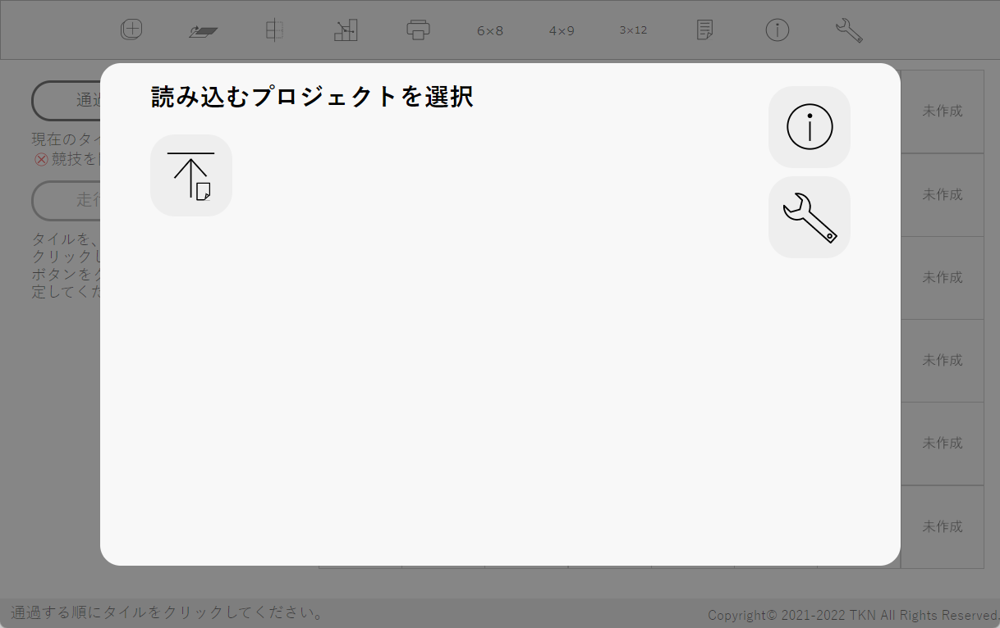

プロジェクトの読み込み
プロジェクトの読み込みコート作成で保存したプロジェクトファイル(WRL)を利用し、実際に競技を行いながら得点を算出できる機能です。
起動するとこのような画面が出ます。アイコンをクリックしてプロジェクトを読み込みます。
プロジェクトの読み込み任意のファイルを選ぶと得点計算を開始します。読み込むことができるファイルの拡張子は.rrlのみ(Safariでは.csvも可、ただしこのソフトウェアで作成されたもののみ)です。NRLのコートには対応していません。
 注意
注意※保存と読み込みは基本的に同じバージョンで行ってください。違うバージョンで行った場合正常に読み込まれないことがあります。メジャーアップデートでRRLファイルの内部構造が変わった場合、新しいバージョンでは古いバージョンのファイルをサポートします。メジャーバージョンが2つ以上古いファイルはサポートしません。その場合はファイル変換をご利用ください。
※下の表で「読み込み可能」となっている場合でも、読み込む側のバージョンよりファイルを作ったバージョンが新しい場合は読み込めませんのでご注意ください。
| 作成(コート作成) | ||||||
| v1.0.0~v2.0.2 | v3.0.0~v3.1.1 | v4.0.0~v4.2.2 | v4.3.0~v4.3.1 | v4.4.0~v4.5.1 | ||
| 読み込み (WRL得点計算) | v4.4.0~ v4.5.1 | × | △ | ○ | | ○ |
○…読み込み可能 △…読み込み可能だが非推奨 ×…ファイル変換が必要 - …不可能
読み込みに関する不具合v4.3.0とv4.3.1では、コート作成機能において、2階部分を含むWRLコートのプロジェクトを保存した際に2階部分がうまく保存されない不具合が発生しています。この不具合はv4.4.0で修正されました。v4.3.0とv4.3.1で作成したファイルをv4.4.0以降で読み込んだ場合、その旨を知らせる警告が出ます。
 ヘルプボタン
ヘルプボタンヘルプを表示します。
プロジェクトを読み込むとこのような画面が出ます。避難ゾーン、白色、未作成のタイルは背景が白になり選択できないようになります。ロボットが通過する順にタイルをクリックして、「走行順序の決定」ボタンを押してください。「走行順序の決定」ボタンはタイルを8枚以上選択すると押せるようになります。
タイルをクリックすると青色になり、右上に数字が表示されます。数字は、競技を通してロボットがそのタイルを通る回数を示しています。
「通過を取り消し」ボタンを押すと直前の操作が取り消せます。
2階部分のタイルは「2階部分を表示」ツールを使って2階に移動した後選択してください。各種ツールの使い方は後述していますのでそちらをご参照ください。
走行順序を決定するとこのような画面が出ます。避難場所、レスキューキットについて競技者が選択してください。この後の変更はできません。
競技の進行を補助したり、詳細を確認するためのツールがあります。
競技を進めるためのツールがあります。
現在のコートの状況を表示します。
得点計算に役立つガイドを表示します。
競技中の画面の一例。
オレンジ色に光っているものは得点要素です。すでにクリアしている場合、得点要素は光りません。競技の進行は、タイルや得点要素をクリックするのではなく、すべて左側のメニューで行います。
「競技開始」を押すとタイマーがスタートし、無条件に5点加算されます。「競技終了」を押すとタイマーがストップします。もし競技が続行しているのに8分が経過した場合、競技を終了するようアラートが出ます。
現在ロボットが走行中のタイル)には、青の影がついています(場合によっては見えにくいこともあります)。
得点要素が何もない場合は「通常のタイル」、得点要素があればその名前が表示されます。
そのタイルにある得点要素をすべてクリアした場合の得点合計が表示されます(チェックマーカーの得点も含む)。
ハザードがあればクリア状況が灰色文字・下線で表示されます。
競技進行の停止数が灰色文字・下線で表示されます。
現在走行中のタイルと同じものを拡大表示しています。
ハザードがあれば、それに関連するツールが表示されます。
ギャップが含まれるタイルの場合のみ表示され、ギャップのクリア・取り消しを行います。1タイルに2つギャップがある場合、先にロボットが通るほうが1つ目と考えて「クリア」を押してください。2つクリアした後は「取り消し」が1個のみ表示され、クリックすると2つ分が取り消されます。
障害物が含まれるタイルの場合のみ表示され、障害物のクリア・取り消しを行います。
バンプが含まれるタイルの場合のみ表示され、バンプのクリア・取り消しを行います。バンプの番号は、コート作成時のバンプ作成画面で指定した番号です。各バンプは独立してクリア・未クリアの状態を扱っているため、必ずしも順番通りにクリアする必要はありません。
傾斜路が含まれるタイルの場合のみ表示され、傾斜路のクリア・取り消しを行います。
傾斜路が含まれるタイルの場合のみ表示され、傾斜路のスキップ・取り消しを行います。傾斜路は1タイルごとに認識しますが、連続している傾斜路は2タイルで10点と定められているので、その場合はどちらかのタイルで「傾斜路をスキップ」を押してください。
交差点が含まれるタイルの場合のみ表示され、ギャップのクリア・取り消しを行います。1タイルに2つ交差点がある場合、先にロボットが通るほうが1つ目と考えて「クリア」を押してください。2つクリアした後は「取り消し」が1個のみ表示され、クリックすると2つ分が取り消されます。
シーソーが含まれるタイルの場合のみ表示され、シーソーのクリア・取り消しを行います。
ライントレースを進めるためのツールが常に表示されます。
現在走行中のタイルを通過扱いにします。チェックマーカーがある場合は、それを押した時点で得点が加算されます(詳細は下の「チェックポイントでの得点」を参照)。チェックポイントでの得点加算後は、そのタイルには戻れません。
直前の通過をもとに戻します。ハザードの状態は元のまま維持されています。プログラムの誤動作防止のため、2つ以上前のタイルには戻れません。
このタイルで競技進行の停止を行います。タイルの右上に赤丸が表示され、そのタイルでの競技進行の停止数が表示されます。もし避難ゾーンを出た後最初のチェックポイント(ない場合ゴール)に着いていなければ、乗数から数値(避難場所のレベルによる)が引かれます。
このタイルの競技進行の停止を1回取り消します。乗数も元に戻ります。
チェックマーカーがあるタイルを通過すると、それまでの通過済みタイル数と競技進行の停止数から得られる点数を加算し、通過したタイルは白色になります。白色になったタイルでは、そこにある得点要素も含め得点の変更ができなくなります。
ロボットが2回以上通過するタイルは、チェックポイントを通過しても、その競技中の最後の通過まで白色になりません。
メニューの「避難ゾーン」の部分にあるボタンを押せば、避難場所とレスキューキットのレベルに応じて乗数を獲得できます。獲得した乗数はボタンの下部に表示されています。競技詳細では得点と乗数を別々に四捨五入しているため、表面上は計算が合わない場合があります。
コートの灰色のタイルのどこかを右クリック(タッチデバイスでは長押し)すると右クリックメニューが表示されます。
このソフトウェア上でもチェックマーカーを追加できます。「チェックマーカーを置く」を押すとクリックしたタイルの右上にチェックマーカーが置かれます。ラインとかぶることがあります。「チェックマーカーを取る」で削除できます。
 スタート画面へ戻るボタン
スタート画面へ戻るボタンスタート画面に戻ることができます。スタート画面に戻ったら「再開」ボタンが追加されているので、それを押すと元に戻ることができます。
 1階部分の表示/2階・半2階部分の表示ボタン
1階部分の表示/2階・半2階部分の表示ボタン1階部分の表示と2階・半2階部分の表示を切り替えることができます。いまどちらを表示しているかはガイドに表示されています。2階部分を表示している場合、2階にタイルがない1階部分のタイルは灰色の背景で表示されています。
 グリッドの表示/非表示ボタン
グリッドの表示/非表示ボタンコートのグリッドの表示・非表示を切り替えることができます。デフォルトではグリッドが表示されています。
 競技の詳細ボタン
競技の詳細ボタン現在行っている競技の詳細情報を閲覧することができます。
 印刷ボタン
印刷ボタン競技時間、得点、コートの状況を印刷できます。
注意Microsoft Edgeで印刷する際は、「その他の設定」の「オプション」にある「背景のグラフィックス」をオンにしてください。
Google Chromeで印刷する際は、「詳細設定」の「オプション」にある「背景のグラフィック」をオンにしてください。
Firefoxで印刷する際は、「ページ設定」の「オプション」にある「背景色と背景画像も印刷」をオンにしてください。
 得点一覧ボタン
得点一覧ボタン日本リーグレスキューの2022ルールに基づき、各要素ごとの得点を掲載しています。詳細な規定はルールをご覧ください。
 etc.6×8タイルボタン、4×9タイルボタン、3×12タイルボタン
etc.6×8タイルボタン、4×9タイルボタン、3×12タイルボタンコートの大きさを変更します。間違って変更してしまっても、入力していたコートの大きさに戻せば「オールクリアボタン」を押していない限り元に戻ります。
ヘルプボタンヘルプを表示します。
Copyright© 2021-2022 TKN All Rights Reserved.